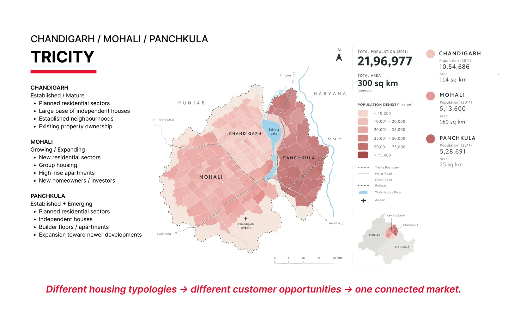
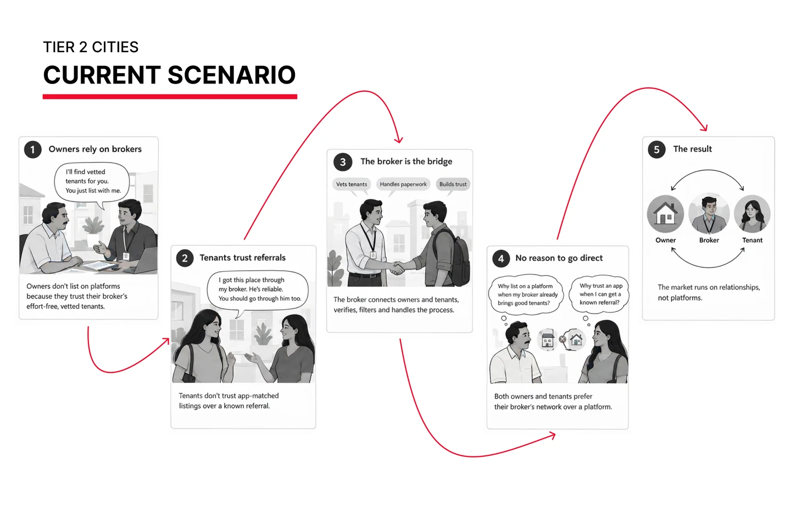
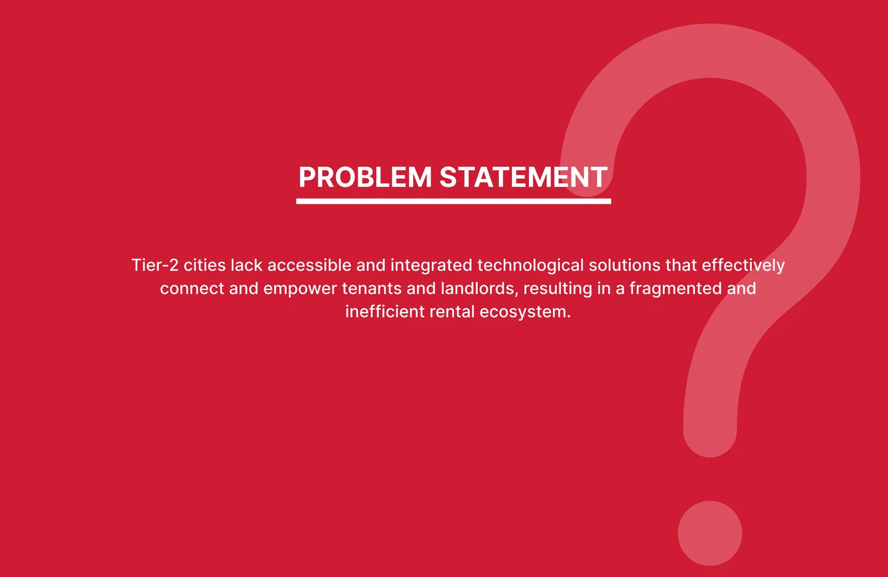
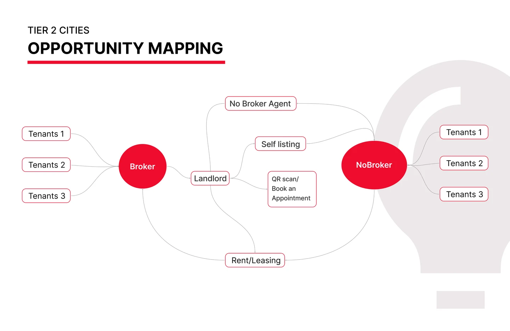
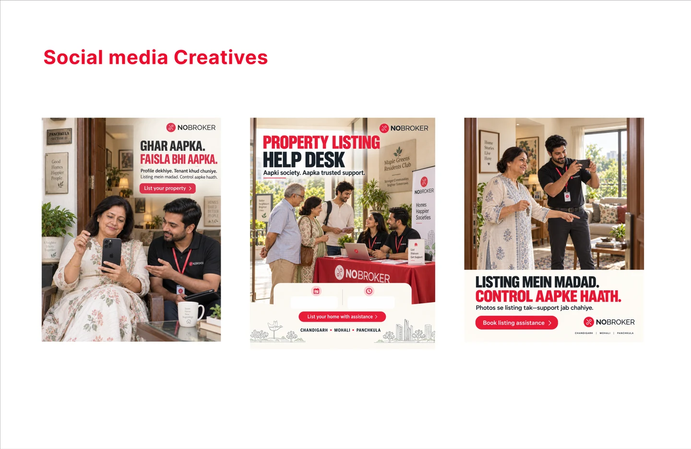
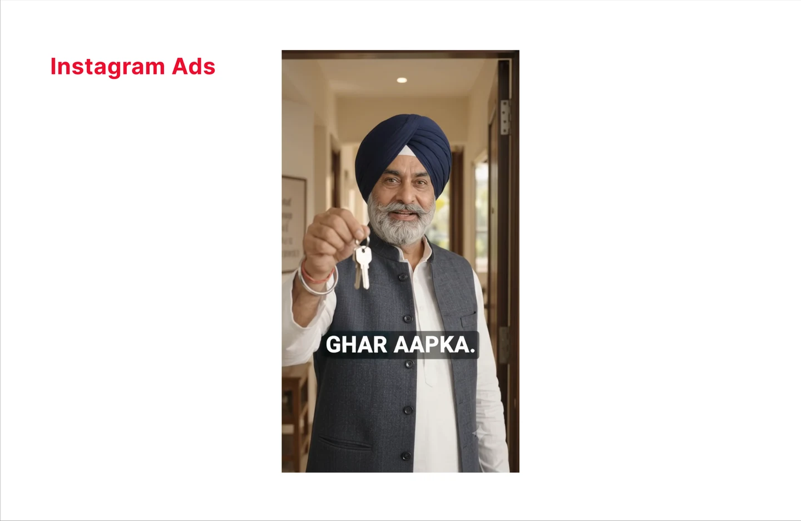
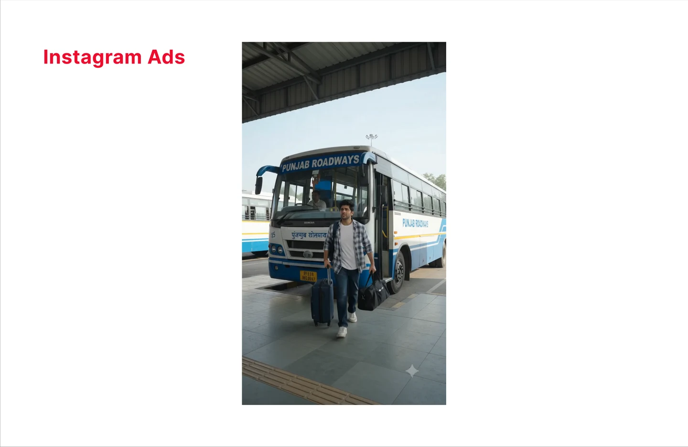
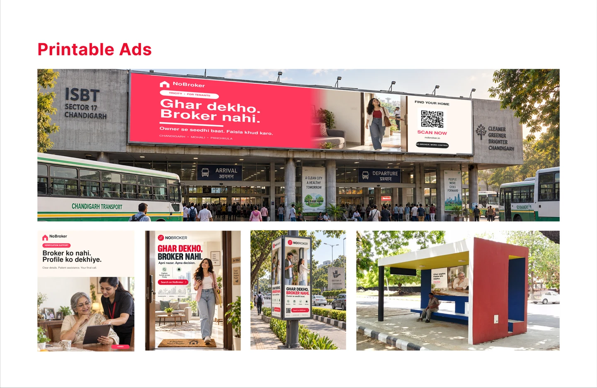

Design Management · 2026
No-Broker
Taking NoBroker into India’s Tier-2 cities, starting with the Chandigarh Tricity: market research, a trust-first campaign, the app layer, and the investment plan.

Design Management · 2026
Taking NoBroker into India’s Tier-2 cities, starting with the Chandigarh Tricity: market research, a trust-first campaign, the app layer, and the investment plan.
















